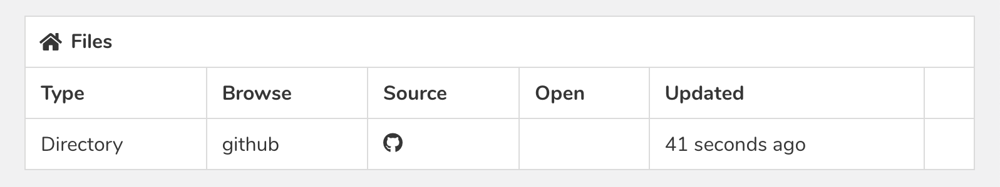
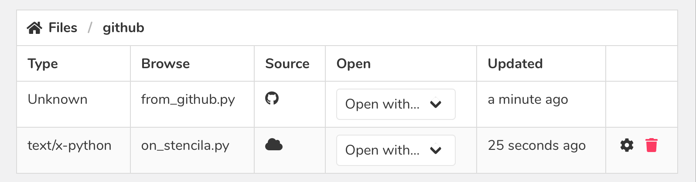

Stencila Hub Enhancements for February 2019
The Stencila Hub is the web application that allows users to easily use Stencila’s tools for executable documents without having to install them on their own machine. In addition, the Hub allows users use to manage projects, accounts, teams, execution sessions and remote code and data sources. To support Stencila Hub’s use in a Data Ethics course at the University of Canterbury, we added a few new features and enhancements, which I will talk about in this post.
Linked Sources
We have completely revamped how file sources work in Stencila Hub, allowing flexibility to how source and other files fit together, no matter where they come from.
For example, a directory can be mapped from a GitHub repository into your Project’s workspace. Then, you can create a file that is hosted inside the Stencila Hub but appears to be inside the GitHub repository without actually being hosted on GitHub. These screenshots illustrate an example.

Here a GitHub repository has been mapped into the github directory of the Project. Navigating inside we see two files.

from_github.py- this is stored in GitHubon_stencila.py- this is stored in the Stencila Hub file storage
Either of these files can be edited with an essentially identical code editor (also new – we have now integrated Monaco Editor ). The only difference is that editing the GitHub file allows the setting of a commit message when saving and automatically creates a commit back to GitHub.
On doing a Project pull, the files are cloned to the local disk and the “virtual” directory structure is mirrored as real files and directories on the file system:
$ ls
github
$ ls github
from_github.py on_stencila.py
$
Hub directories can also contain other linked sources, and sources can even be nested inside each other (including sources from different providers [although only GitHub is supported at present, we plan to integrate with DropBox and Google Drive soon]). All content can be edited through the Hub, and if your script generates new files on disk they will be browseable and editable through the Hub too.
Project Archiving
One of the requirements of the Data Ethics course was to be able to archive a project at a point in time, so students were able to prove when a particular lab or assignment was completed. This is also a common use case for other educators.
Stencila Hub now has Project Archiving. This will create a zip archive of the entire Project file contents. First it pulls all the linked sources and combines with the files already on disk, and then zips up this folder. The zip archive name contains the date it was created so students are not able to fake this to pretend an assignment was completed earlier than it was. Optionally, students may add a tag which is prepended to the archive name to help identify it.
Project access rights (covered in more detail in the next section) are applied so only users who have access to the Project can download the Archive.
Accounts, Teams, Project Permissions
Also new to the Stencila Hub is an enhanced, flexible permissions system.
-
Accountscan have multipleUsersassigned to them with different levels of permission. -
Teamscan have multipleUsers, andUserscan be in any number ofTeams. Access toProjectscan be given on aTeamorUserbasis. -
A
User’s access is based on the highest level available – if aUseritself has only read access but is in aTeamwith modify access theUserwill be able to modify the Project and its files.
All this additional flexibility is useful in an education environment. A Team can be created to contain all the students in a class and given read access to a reference Project, either before a lab or after its completion to be able to compare solutions.
A course instructor or tutor can be given read access to the studen’t project in order to view archives to verify solutions, or write access to assist with code changes or data fixes.
Conclusion
These are just a few of the changes that we’ve made to Stencila Hub in order to meet the needs of the University of Canterbury, other educational institutes, and the Stencila Community as a whole.
We’re looking for beta testers of the Stencila Hub: you can find out more on our Beta Testing Program Page . If you want to use Stencila to teach your students but it doesn’t quite meet your needs yet, please contact Stencila and we’ll discuss what we can do to help.